Spark on your Oracle Data Warehouse
Table of Contents
1 Background and Motivation
Figure 1 depicts a not uncommon deployment for an Enterprise that uses both open source systems and an Oracle Warehouse. Enterprises are deploying some of their production workloads on open source technologies with the current favorite being Apache Spark. The Oracle Warehouse and open source systems typically share a common storage fabric, typically an object store like Amazon S3. Some of the motives driving such a move are:
- newer Applications utilize capabilities such as machine learning and low-latency ingest; open source technologies like Apache Spark, Apache Pulsar, TensorFlow provide deep and fast evolving capabilities in these areas.
- the open source community has done a good job of catering to developers; making it quite easy for small teams to fairly quickly develop and deploy point solutions.
- price performance metrics of open source systems when dealing with 'Big Data' are perceived to be superior and an open source strategy is preferred nowadays to avoid vendor lock in.
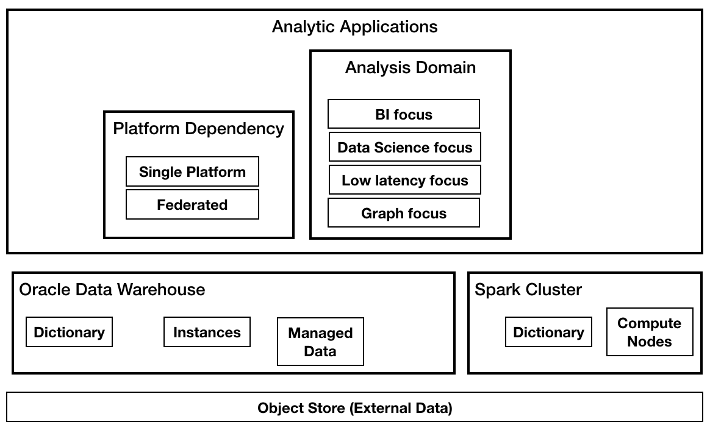
Figure 1: Enterprise Data Lake
The promise of such a 'Enterprise Data Lake' deployment is that it provides a best of both worlds: enabling newer applications to leverage open source stacks without disrupting traditional production workloads such as Enterprise Performance, Business Intelligence Dashboards and Reports, Financial Planning etc.
1.1 Reality of these deployments
Even though open source systems share the storage fabric with the Oracle warehouse, these systems mostly run as silos: each system aspires to be a full-featured data platform for their developer communities. Coexistence with other platforms is an after thought, and mostly handled with a 'connector' story. Connectors at best help reduce data movement between the systems; even this claim has holes and in reality many problems are left unsolved such as coordination and scheduling of tasks across these systems, co-location of runtime resources, efficient data value mapping(not withstanding the promise of Apache Arrow), and deep translation and pushdown of SQL.
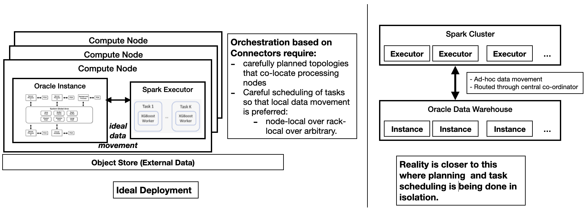
Figure 2: Non-optimal Data movement and Work coordination between systems
1.2 For the Oracle customer
Within the space of multi-system deployments there is a segment of customer whose data platform is centered around an Oracle Data Warehouse, but who still deploys some Data Applications using Apache Spark. Such customers are often surprised by the significant increase in operational cost of running Spark and Oracle in production:
- In areas such as Workload management, Query optimization, Data management, Data security Oracle customers are surprised by missing capabilities in Spark and how much manual labor is needed to compensate for this. They are surprised by the investment needed in having to employ a fairly big Data Engineering and Platform team for Spark.
- To meet operational SLAs Spark clusters end by being over-provisioned; to quote
Pepperdata "optimization of cloud systems can 'win back' about 50% of task
hours… larger organizations can save as much as
$7.9million a year".
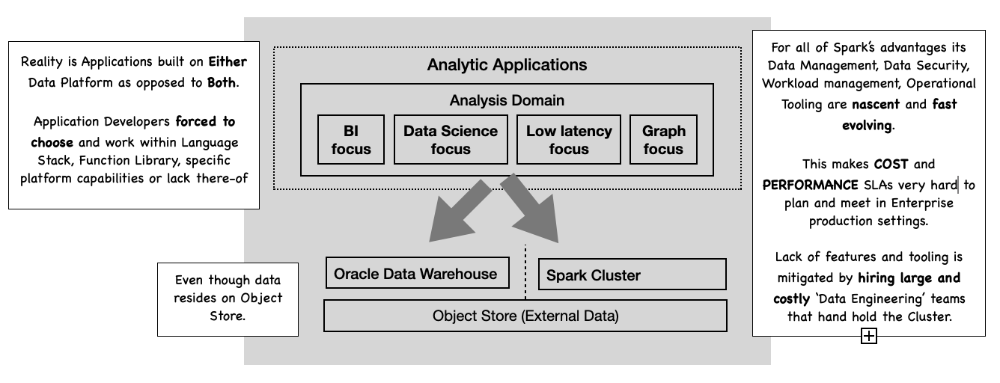
Figure 3: Reality: Oracle Customers and Spark
2 Our Solution: An integrated platform
We provide Oracle Customers with a more integrated environment where Data management and operational tasks are mostly handled in the Oracle Warehouse. At the same time App. developers are abstracted away from the inner workings of the platform, given them more fluidity in the choices of Language and Functions for their Applications. This fits into Oracle's convergence story of consistent data management, security, operations across all kinds of data processing tasks.
There is no impact on Applications written against the Spark programming model. Customers would deploy Spark in the usual ways: local-mode, cluster-mode, server-less etc; with an additional extension jar provided by oracle and instructions on how to configure the Oracle extensions. Since lesser amounts of processing needs to be done in Spark, and Oracle is leveraged for Administration and Data Management it opens the door to operate smaller and operationally simpler Spark clusters.
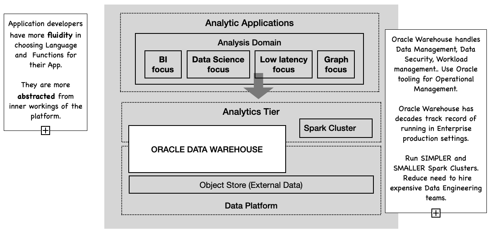
Figure 4: An integrated Oracle and Spark architecture
In order to make this happen, we provide the following new capabilities:
- Catalog Integration
- The Oracle Data Dictionary will be the source of truth for all metadata. We extend the Spark Catalog to be integrated with the Oracle Dictionary.
- Program Translation and Pushdown
- by far this is the most important capability that involves the translation of Spark SQL into Oracle SQL(and PL-SQL) for pipelines when the data is residing/managed in Oracle. This applies to more than raw table data stored in Oracle to data managed in Oracle via such things as Materialized Views, Analytic Views and In-Memory Option. Pushing the processing to where the data is, even for complex data pipelines provides the biggest differentiation from 'connector' architectures.
- Language Integration
- Language Integration encompasses capabilities that extend Apache Spark such that on the one hand native Oracle functions and data structures are usable in Spark programs and on the other hand the translation of a subset of custom scala programs into equivalent oracle sql/pl-sql, so that larger parts of Spark pipelines are pushed down to the Oracle DB for processing.
- Runtime Integration
- Even with Pushdown and Language Integration there are many pipelines that will contain Spark specific program code; this would trigger large amounts of data to be streamed out of Oracle to Spark executors. A Spark co-processor either co-located with Oracle instances or embedded in them would allow for limited Spark pipelines to be shipped to the Oracle instances for execution.
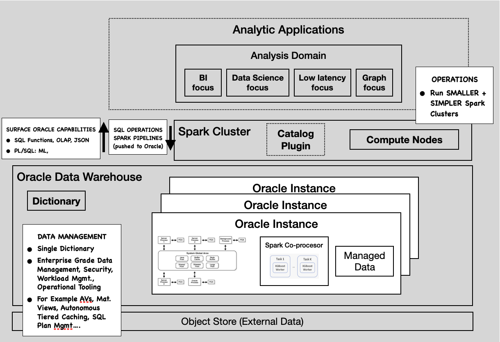
Figure 5: Capabilities of an integrated system
3 Summary of Spark Extensions
3.1 Catalog Integration
We leverage the Catalog Integration and DataSources v2 API in Apache Spark 3.0 to provide a custom plug-in Catalog that integrates with the Oracle Database Data Dictionary. A common catalog implies all persistent data, including data residing in an Object Store is represented in the Oracle Data Dictionary. Hence both systems have a consistent view of the Data Warehouse; a common and consistent enforcement of role and data based security, a common metadata and data consistency model can be applied.
3.2 SQL Translation and Pushdown
These are based on techniques developed over many years to extend the Spark Planner with custom Query Optimizations. See Spark Druid OLAP and Sparklinedata BI Stack on Spark. From the early days it has been possible to extend Spark's Logical and Physical planners. By rewriting Spark Plans we can go way beyond what most Spark 'connectors' provide(that is pushing projections and filters to the underlying system); We are able to entirely push complex analysis pipelines containing all the analytical functions and operators of Spark SQL.
For the TPCDS benchmark we are able to completely pushed down over 90 of the 99 queries. For example Figure 6 shows the non-pushdown vs pushdown plan for TPCDS query q1. We provide more details about TPCDS queries in the TPCDS Queries section.
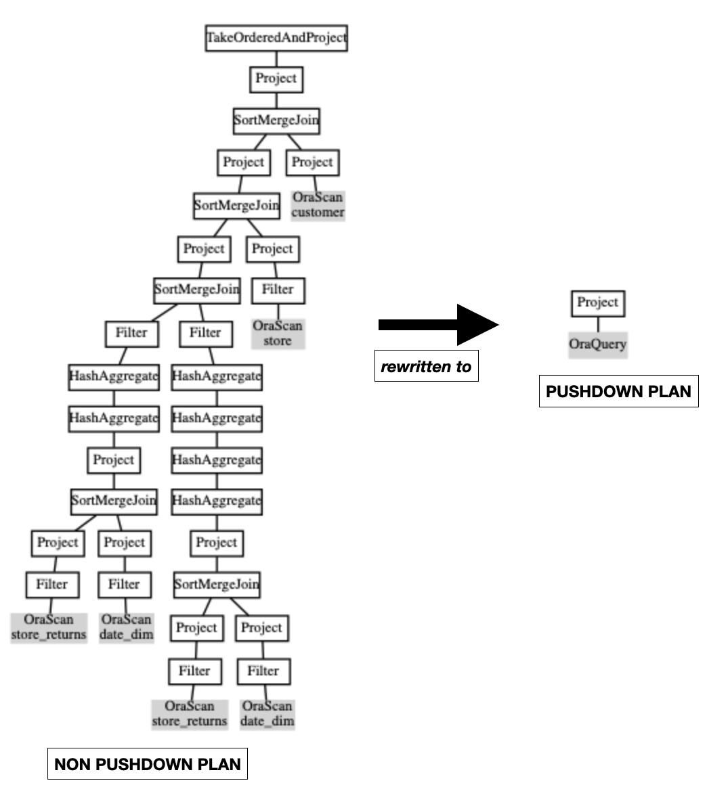
Figure 6: TPCDS Query Q1: non-pushdown vs pushdown plan.
When a pushdown query returns a lot of data, the single pipe between a Spark task and the database instance could become a bottleneck of query execution. The Query Splitting feature attempts to split an oracle pushdown query into a set of queries such that the union-all of the results is the same as the original query result. The query can be split by Input Table(s) partitions or blocks or by output Result-Set row ranges.
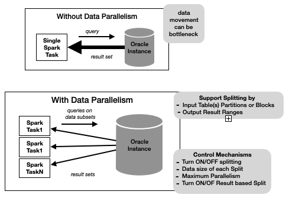
Figure 7: Query Splitting
For DML operations we integrate into Spark's Datasources v2 API to provide transactionally consistent DML: during spark job execution, all other jobs will see the state of the table as of the start of the job and we don't have to prevent concurrent dml jobs on a table. On success, the destination table will be in a state that matches some serialization of the jobs. Under the covers data is first written to Temp. tables in Oracle before being merged into the destination table on commit.
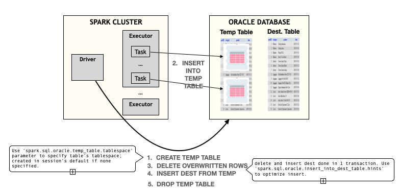
Figure 8: Insert Flow
3.3 Language Integration
We leverage the ability to register of Custom Functions in Spark to enable the registration of Oracle SQL functions into Spark. These functions can then be used in Spark-SQL on Oracle tables. Our Planner extensions translate these into equivalent Oracle SQL for execution.
We are also investigating surfacing Oracle ML and Geo-spatial capabilities into the Spark programming model.
3.3.1 Spark SQL Macros
Spark provides the ability to register custom functions written in Scala.
Under the covers an Invoke Catalyst Expression is associated with the function
name in Spark's Function Registry. These functions are usable in Spark-SQL
just like built-in functions. At runtime an Invoke Catalyst Expression runs
the associated function body.
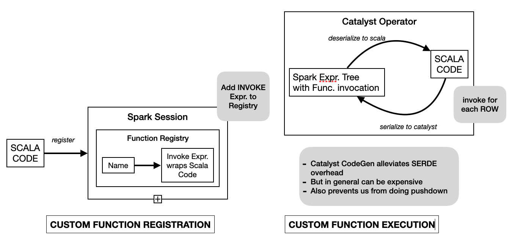
Figure 9: Spark Function Registration and Execution
We have developed the Spark SQL Macros capability that provides the ability to register custom scala functions into a Spark Session just like the custom UDF Registration capability of Spark. The difference being that the SQL Macros registration mechanism attempts to translate the function body to an equivalent Spark catalyst Expression with holes(MarcroArg catalyst expressions). Under the covers SQLMacro is a set of scala blackbox macros that attempt to rewrite the scala function body AST into an equivalent catalyst Expression. There are 2 big benefits of doing this:
- better performance. Since at runtime we avoid the SerDe cost at the function boundary.
- Since the physical plan has native catalyst expressions more optimizations are possible. In the case of Oracle pushdown we are able to pushdown the catalyst expressions to Oracle SQL, avoiding streaming data out of Oracle even in the presence of these kinds of custom UDFs.
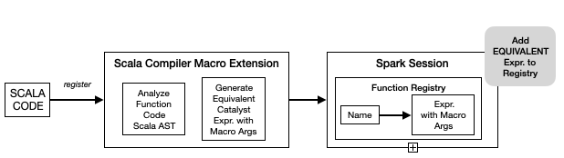
Figure 10: Spark SQL Macro Registration and Execution
3.4 Runtime Integration
We are investigating the concept of a Spark Co-Processor. A co-processor will be a very limited and isolated Spark environment whose only capability is to run a given Spark operator pipeline in a single Task(the Pipeline cannot contain Shuffle operations). Co-processors are unaware of cluster topology or the data dictionary. They are dumb processing units for running custom scala code that apply row/row-group transformations. A Co-Processor could be an isolated process co-located with Oracle Instance processes or it could be embedded inside an Oracle process along the lines of how a javascript engine is embedded inside an Oracle process.
Logically a Spark Plan will get translated into Oracle SQL query blocks connected by calls to a Partitioned Table function. At runtime, this function will be the bridge to the co-processor in the Oracle Operator pipeline. Each Table function invocation will stream its input partition to and from the co-processor; it will coordinate setting up and shutting down the Spark pipeline and executing the pipeline on data chunks. Data Parallelism between Oracle and Spark will be controlled by using Pipelined Parallel Table Function mechanics specifically Order By/Cluster By clauses in its definition.
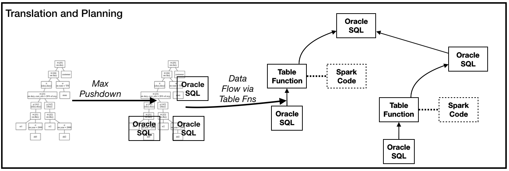
Figure 11: Logical Oracle Plan structure with Table function calls
4 A Peek under the covers
We walk through a sample session of this integrated environment and show some examples. The Oracle Instance is loaded with the TPCDS dataset and we connect to it via Spark Shell. The Spark Configuration for this environment has extra settings such as the connection information and query pushdown instructions.
# Oracle Catalog # enable Spark Oracle extensions spark.sql.extensions=org.apache.spark.sql.oracle.SparkSessionExtensions spark.kryo.registrator=org.apache.spark.sql.connector.catalog.oracle.OraKryoRegistrator # enable the Oracle Catalog integration spark.sql.catalog.oracle=org.apache.spark.sql.connector.catalog.oracle.OracleCatalog # oracle instance connection information spark.sql.catalog.oracle.url=dbc:oracle:thin:@den02ads:1531/cdb1_pdb7.dev.us.oracle.com spark.sql.catalog.oracle.user=tpcds spark.sql.catalog.oracle.password=... # oracle sql logging and jdbc fetchsize spark.sql.catalog.oracle.log_and_time_sql.enabled=true spark.sql.catalog.oracle.log_and_time_sql.log_level=info spark.sql.catalog.oracle.fetchSize=5000 # Query pushdown spark.sql.oracle.enable.pushdown=true # Parallelize data movement. spark.sql.oracle.enable.querysplitting=true spark.sql.oracle.querysplit.target=1Mb spark.sql.oracle.querysplit.maxfetch.rounds=0.5
The Spark shell is then started in the normal way; for example in local mode one
could issue: bin/spark-shell --properties-file spark.oracle.properties --master
local[*].
4.1 Catalog Integration
The user can browse the Oracle catalog and describe individual tables.
sql("use oracle").show()
sql("show tables").show(10000, false)
sql("describe store_sales").show(10000, false)
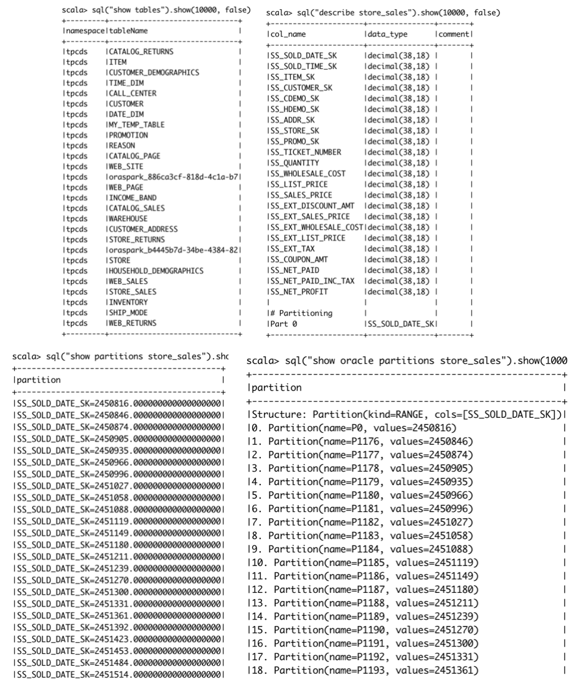
Figure 12: Catalog Commands
Oracle has many partitioning schemes such as RANGE, LIST, INTERVAL, and HASH
which don't map very well to Spark's value based partitioning scheme; the output
Spark SQL show partitions command doesn't give the full partitioning picture.
So we have extended Spark SQL; users can issue show oracle partitions to
see the table partitioning details.
// show partitions
sql("show partitions store_sales").show(1000, false)
// spark language extension to see oracle partitions properly
sql("show oracle partitions store_sales").show(1000, false)
4.2 TPCDS Queries
The TPCDS benchmark contains many complex analysis patterns such
Star-Schema-Agg-Joins, Multi-Star-Schema-Analysis, Windowing-Functions,
Correlated-SubQueries etc. As we have mentioned we are able to completely
pushed down over 90 of the 99 queries.
4.2.1 Q1
- Query is about identifying 'problem' customers.
- Query involves joins, aggregates, a CTE, a subquery expression, Order By
val q1 = s""" with customer_total_return as (select sr_customer_sk as ctr_customer_sk ,sr_store_sk as ctr_store_sk ,sum(SR_RETURN_AMT) as ctr_total_return from store_returns ,date_dim where sr_returned_date_sk = d_date_sk and d_year =2000 group by sr_customer_sk ,sr_store_sk) select c_customer_id from customer_total_return ctr1 ,store ,customer where ctr1.ctr_total_return > (select avg(ctr_total_return)*1.2 from customer_total_return ctr2 where ctr1.ctr_store_sk = ctr2.ctr_store_sk) and s_store_sk = ctr1.ctr_store_sk and s_state = 'TN' and ctr1.ctr_customer_sk = c_customer_sk order by c_customer_id limit 100; """.stripMargin ```
Running this query sql(q1).show(1000000, false) with the pushdown flag on pushes
the entire query to Oracle and it runs in sub-second time. Issuing a
sql(s"explain oracle pushdown $q1").show(1000, false)
shows the Spark Plan and the Oracle Query pushed down. (here again we have
extended Spark SQL with the explain oracle pushdown command which is similar
to Spark's explain command with the addition that we show the oracle pushdown
details). The output shows that for Spark this is a very simple Plan of a custom
Scan followed by a Project. Figure 6 show the plan visually.
sql(s"explain oracle pushdown $q1").show(1000, false)
|Project (1)
+- BatchScan (2)
(2) BatchScan
Oracle Instance:
DataSourceKey(jdbc:oracle:thin:@den02ads:1531/cdb1_pdb7.regress.rdbms.dev.us.oracle.com,tpcds)
Pushdown Oracle SQL:
select "C_CUSTOMER_ID"
from ( select "C_CUSTOMER_ID"
from ( select "SR_CUSTOMER_SK" AS "ctr_customer_sk", "SR_STORE_SK" AS "ctr_store_sk", SUM("SR_RETURN_AMT") AS "ctr_total_return"
from TPCDS.STORE_RETURNS join TPCDS.DATE_DIM on ("SR_RETURNED_DATE_SK" = "D_DATE_SK")
where ((("SR_STORE_SK" IS NOT NULL AND "SR_CUSTOMER_SK" IS NOT NULL) AND "SR_RETURNED_DATE_SK" IS NOT NULL) AND ("D_YEAR" IS NOT NULL AND ("D_YEAR" = 2000.000000000000000000)))
group by "SR_CUSTOMER_SK", "SR_STORE_SK" ) join ( select "1_sparkora", "2_sparkora"
from ( select (AVG("ctr_total_return") * 1.2000000000000000000000) AS "1_sparkora", "ctr_store_sk" AS "2_sparkora"
from ( select "SR_STORE_SK" AS "ctr_store_sk", SUM("SR_RETURN_AMT") AS "ctr_total_return"
from TPCDS.STORE_RETURNS join TPCDS.DATE_DIM on ("SR_RETURNED_DATE_SK" = "D_DATE_SK")
where (("SR_STORE_SK" IS NOT NULL AND ("SR_RETURNED_DATE_SK" IS NOT NULL AND "SR_RETURNED_DATE_SK" IS NOT NULL)) AND ("D_YEAR" IS NOT NULL AND ("D_YEAR" = 2000.000000000000000000)))
group by "SR_CUSTOMER_SK", "SR_STORE_SK" )
group by "ctr_store_sk" )
where "1_sparkora" IS NOT NULL ) on (("ctr_store_sk" = "2_sparkora") AND (cast("ctr_total_return" as NUMBER(38, 20)) > "1_sparkora")) join TPCDS.STORE on ("ctr_store_sk" = "S_STORE_SK") join TPCDS.CUSTOMER on ("ctr_customer_sk" = "C_CUSTOMER_SK")
where ("ctr_total_return" IS NOT NULL AND ("S_STATE" IS NOT NULL AND ("S_STATE" = 'TN')))
order by "C_CUSTOMER_ID" ASC NULLS FIRST )
where rownum <= 100
Pushdown Oracle SQL, Query Splitting details:
Query is not split
Contrast this with the plan when spark.sql.oracle.enable.pushdown=false. This
setting turns of the Query rewrites, so the query plan generated and execution
is similar to what you would get with a regular 'connector' that provides a
custom Spark v2 DataSource. The Spark Plan contains Spark Operations to do the
Joins, Aggregates… only the base Table filtering and projection is pushed to Oracle. Figure
6 show the plan visually. Not surprisingly execution with pushdown off
takes considerably longer to run: 10s of seconds.
spark.sqlContext.setConf("spark.sql.oracle.enable.pushdown", "false")
sql(s"explain oracle pushdown $q1").show(1000, false)
|TakeOrderedAndProject (1)
+- Project (2)
+- SortMergeJoin Inner (3)
:- Project (4)
: +- SortMergeJoin Inner (5)
: :- Project (6)
: : +- SortMergeJoin Inner (7)
: : :- Filter (8)
: : : +- HashAggregate (9)
: : : +- HashAggregate (10)
: : : +- Project (11)
: : : +- SortMergeJoin Inner (12)
: : : :- Project (13)
: : : : +- Filter (14)
: : : : +- BatchScan (15)
: : : +- Project (16)
: : : +- Filter (17)
: : : +- BatchScan (18)
: : +- Filter (19)
: : +- HashAggregate (20)
: : +- HashAggregate (21)
: : +- HashAggregate (22)
: : +- HashAggregate (23)
: : +- Project (24)
: : +- SortMergeJoin Inner (25)
: : :- Project (26)
: : : +- Filter (27)
: : : +- BatchScan (28)
: : +- Project (29)
: : +- Filter (30)
: : +- BatchScan (31)
: +- Project (32)
: +- Filter (33)
: +- BatchScan (34)
+- Project (35)
+- BatchScan (36)
(15) BatchScan
Oracle Instance:
DataSourceKey(jdbc:oracle:thin:@den02ads:1531/cdb1_pdb7.regress.rdbms.dev.us.oracle.com,tpcds)
Pushdown Oracle SQL:
select "SR_CUSTOMER_SK", "SR_STORE_SK", "SR_RETURN_AMT", "SR_RETURNED_DATE_SK"
from TPCDS.STORE_RETURNS
where ("SR_STORE_SK" IS NOT NULL AND "SR_CUSTOMER_SK" IS NOT NULL) and "SR_RETURNED_DATE_SK" IS NOT NULL
Pushdown Oracle SQL, Query Splitting details:
Query is not split
(18) BatchScan
Oracle Instance:
DataSourceKey(jdbc:oracle:thin:@den02ads:1531/cdb1_pdb7.regress.rdbms.dev.us.oracle.com,tpcds)
Pushdown Oracle SQL:
select "D_DATE_SK", "D_YEAR"
from TPCDS.DATE_DIM
where ("D_YEAR" IS NOT NULL AND ("D_YEAR" = 2000.000000000000000000))
Pushdown Oracle SQL, Query Splitting details:
Query is not split
(28) BatchScan
Oracle Instance:
DataSourceKey(jdbc:oracle:thin:@den02ads:1531/cdb1_pdb7.regress.rdbms.dev.us.oracle.com,tpcds)
Pushdown Oracle SQL:
select "SR_CUSTOMER_SK", "SR_STORE_SK", "SR_RETURN_AMT", "SR_RETURNED_DATE_SK"
from TPCDS.STORE_RETURNS
where "SR_STORE_SK" IS NOT NULL and ("SR_RETURNED_DATE_SK" IS NOT NULL AND "SR_RETURNED_DATE_SK" IS NOT NULL)
Pushdown Oracle SQL, Query Splitting details:
Query is not split
(31) BatchScan
Oracle Instance:
DataSourceKey(jdbc:oracle:thin:@den02ads:1531/cdb1_pdb7.regress.rdbms.dev.us.oracle.com,tpcds)
Pushdown Oracle SQL:
select "D_DATE_SK", "D_YEAR"
from TPCDS.DATE_DIM
where ("D_YEAR" IS NOT NULL AND ("D_YEAR" = 2000.000000000000000000))
Pushdown Oracle SQL, Query Splitting details:
Query is not split
(34) BatchScan
Oracle Instance:
DataSourceKey(jdbc:oracle:thin:@den02ads:1531/cdb1_pdb7.regress.rdbms.dev.us.oracle.com,tpcds)
Pushdown Oracle SQL:
select "S_STORE_SK", "S_STATE"
from TPCDS.STORE
where ("S_STATE" IS NOT NULL AND ("S_STATE" = 'TN'))
Pushdown Oracle SQL, Query Splitting details:
Query is not split
(36) BatchScan
Oracle Instance:
DataSourceKey(jdbc:oracle:thin:@den02ads:1531/cdb1_pdb7.regress.rdbms.dev.us.oracle.com,tpcds)
Pushdown Oracle SQL:
select "C_CUSTOMER_SK", "C_CUSTOMER_ID"
from TPCDS.CUSTOMER
Pushdown Oracle SQL, Query Splitting details:
Query is not split
4.2.2 Pushdown plan for Q5, Q69
Following are pushdown plans for couple more TPCDS queries to show the extent of the pushdown we can do.
- Query Q5 is a multi star schema report across Sales, Web and Catalog channels. Its SQL contains joins, aggregates, unions, CTEs, rollup.
- Query 69 is used to identify customers with different buying behavior in 2 separate quarters. Its SQL contains joins, aggregates, subquery predicates.
TPCDS Q5 oracle pushdown:
sql(s"explain oracle pushdown $q5").show(1000, false)
|Project (1)
+- BatchScan (2)
(2) BatchScan
Oracle Instance:
DataSourceKey(jdbc:oracle:thin:@den02ads:1531/cdb1_pdb7.regress.rdbms.dev.us.oracle.com,tpcds)
Pushdown Oracle SQL:
select "channel_10_sparkora", "id_6_sparkora", "sales", "returns", "profit"
from ( select "channel_10_sparkora", "id_6_sparkora", SUM("sales") AS "sales", SUM("returns") AS "returns", SUM("profit") AS "profit"
from ( select SUM("sales_price") AS "sales", SUM("return_amt") AS "returns", (cast(SUM("profit") as NUMBER(38, 17)) - cast(SUM("net_loss") as NUMBER(38, 17))) AS "profit", 'store channel' AS "channel", CONCAT('store' , "S_STORE_ID") AS "id"
from ( select "SS_STORE_SK" AS "store_sk", "SS_SOLD_DATE_SK" AS "date_sk", "SS_EXT_SALES_PRICE" AS "sales_price", "SS_NET_PROFIT" AS "profit", 0E-18 AS "return_amt", 0E-18 AS "net_loss"
from TPCDS.STORE_SALES
where ("SS_STORE_SK" IS NOT NULL AND "SS_SOLD_DATE_SK" IS NOT NULL) UNION ALL select "SR_STORE_SK" AS "store_sk", "SR_RETURNED_DATE_SK" AS "date_sk", 0E-18 AS "sales_price", 0E-18 AS "profit", "SR_RETURN_AMT" AS "return_amt", "SR_NET_LOSS" AS "net_loss"
from TPCDS.STORE_RETURNS
where ("SR_STORE_SK" IS NOT NULL AND "SR_RETURNED_DATE_SK" IS NOT NULL) ) join TPCDS.DATE_DIM on ("date_sk" = "D_DATE_SK") join TPCDS.STORE on ("store_sk" = "S_STORE_SK")
where (("D_DATE" IS NOT NULL AND ("D_DATE" >= TRUNC(TIMESTAMP '2000-08-23 07:00:00.000000'))) AND ("D_DATE" <= TRUNC(TIMESTAMP '2000-09-06 07:00:00.000000')))
group by "S_STORE_ID" UNION ALL select SUM("sales_price") AS "sales", SUM("return_amt") AS "returns", (cast(SUM("profit") as NUMBER(38, 17)) - cast(SUM("net_loss") as NUMBER(38, 17))) AS "profit", 'catalog channel' AS "channel", CONCAT('catalog_page' , "CP_CATALOG_PAGE_ID") AS "id"
from ( select "CS_CATALOG_PAGE_SK" AS "page_sk", "CS_SOLD_DATE_SK" AS "date_sk", "CS_EXT_SALES_PRICE" AS "sales_price", "CS_NET_PROFIT" AS "profit", 0E-18 AS "return_amt", 0E-18 AS "net_loss"
from TPCDS.CATALOG_SALES
where ("CS_CATALOG_PAGE_SK" IS NOT NULL AND "CS_SOLD_DATE_SK" IS NOT NULL) UNION ALL select "CR_CATALOG_PAGE_SK" AS "page_sk", "CR_RETURNED_DATE_SK" AS "date_sk", 0E-18 AS "sales_price", 0E-18 AS "profit", "CR_RETURN_AMOUNT" AS "return_amt", "CR_NET_LOSS" AS "net_loss"
from TPCDS.CATALOG_RETURNS
where ("CR_CATALOG_PAGE_SK" IS NOT NULL AND "CR_RETURNED_DATE_SK" IS NOT NULL) ) join TPCDS.DATE_DIM on ("date_sk" = "D_DATE_SK") join TPCDS.CATALOG_PAGE on ("page_sk" = "CP_CATALOG_PAGE_SK")
where (("D_DATE" IS NOT NULL AND ("D_DATE" >= TRUNC(TIMESTAMP '2000-08-23 07:00:00.000000'))) AND ("D_DATE" <= TRUNC(TIMESTAMP '2000-09-06 07:00:00.000000')))
group by "CP_CATALOG_PAGE_ID" UNION ALL select SUM("sales_price") AS "sales", SUM("return_amt") AS "returns", (cast(SUM("profit") as NUMBER(38, 17)) - cast(SUM("net_loss") as NUMBER(38, 17))) AS "profit", 'web channel' AS "channel", CONCAT('web_site' , "WEB_SITE_ID") AS "id"
from ( select "WS_WEB_SITE_SK" AS "wsr_web_site_sk", "WS_SOLD_DATE_SK" AS "date_sk", "WS_EXT_SALES_PRICE" AS "sales_price", "WS_NET_PROFIT" AS "profit", 0E-18 AS "return_amt", 0E-18 AS "net_loss"
from TPCDS.WEB_SALES
where ("WS_WEB_SITE_SK" IS NOT NULL AND "WS_SOLD_DATE_SK" IS NOT NULL) UNION ALL select "WS_WEB_SITE_SK" AS "wsr_web_site_sk", "WR_RETURNED_DATE_SK" AS "date_sk", 0E-18 AS "sales_price", 0E-18 AS "profit", "WR_RETURN_AMT" AS "return_amt", "WR_NET_LOSS" AS "net_loss"
from TPCDS.WEB_RETURNS join TPCDS.WEB_SALES on (("WR_ITEM_SK" = "WS_ITEM_SK") AND ("WR_ORDER_NUMBER" = "WS_ORDER_NUMBER"))
where ("WR_RETURNED_DATE_SK" IS NOT NULL AND "WS_WEB_SITE_SK" IS NOT NULL) ) join TPCDS.DATE_DIM on ("date_sk" = "D_DATE_SK") join TPCDS.WEB_SITE on ("wsr_web_site_sk" = "WEB_SITE_SK")
where (("D_DATE" IS NOT NULL AND ("D_DATE" >= TRUNC(TIMESTAMP '2000-08-23 07:00:00.000000'))) AND ("D_DATE" <= TRUNC(TIMESTAMP '2000-09-06 07:00:00.000000')))
group by "WEB_SITE_ID" ) , lateral ( select "channel" "channel_10_sparkora", "id" "id_6_sparkora", 0 "spark_grouping_id_8_sparkora" from dual union all select "channel", null, 1 from dual union all select null, null, 3 from dual )
group by "channel_10_sparkora", "id_6_sparkora", "spark_grouping_id_8_sparkora"
order by "channel_10_sparkora" ASC NULLS FIRST, "id_6_sparkora" ASC NULLS FIRST )
where rownum <= 100
Pushdown Oracle SQL, Query Splitting details:
Query is not split
TPCDS Q69 oracle pushdown:
sql(s"explain oracle pushdown $q69").show(1000, false)
|Project (1)
+- BatchScan (2)
(2) BatchScan
Oracle Instance:
DataSourceKey(jdbc:oracle:thin:@den02ads:1531/cdb1_pdb7.regress.rdbms.dev.us.oracle.com,tpcds)
Pushdown Oracle SQL:
select "CD_GENDER", "CD_MARITAL_STATUS", "CD_EDUCATION_STATUS", "cnt1", "CD_PURCHASE_ESTIMATE", "cnt2", "CD_CREDIT_RATING", "cnt3"
from ( select "CD_GENDER", "CD_MARITAL_STATUS", "CD_EDUCATION_STATUS", COUNT(1) AS "cnt1", "CD_PURCHASE_ESTIMATE", COUNT(1) AS "cnt2", "CD_CREDIT_RATING", COUNT(1) AS "cnt3"
from TPCDS.CUSTOMER "sparkora_0" join TPCDS.CUSTOMER_ADDRESS on ("C_CURRENT_ADDR_SK" = "CA_ADDRESS_SK") join TPCDS.CUSTOMER_DEMOGRAPHICS on ("C_CURRENT_CDEMO_SK" = "CD_DEMO_SK")
where ((((("C_CURRENT_ADDR_SK" IS NOT NULL AND "C_CURRENT_CDEMO_SK" IS NOT NULL) AND "sparkora_0"."C_CUSTOMER_SK" IN ( select "SS_CUSTOMER_SK"
from TPCDS.STORE_SALES join TPCDS.DATE_DIM on ("SS_SOLD_DATE_SK" = "D_DATE_SK")
where ("SS_SOLD_DATE_SK" IS NOT NULL AND (((("D_YEAR" IS NOT NULL AND "D_MOY" IS NOT NULL) AND ("D_YEAR" = 2001.000000000000000000)) AND ("D_MOY" >= 4.000000000000000000)) AND ("D_MOY" <= 6.000000000000000000))) )) AND not exists ( select 1
from TPCDS.WEB_SALES join TPCDS.DATE_DIM on ("WS_SOLD_DATE_SK" = "D_DATE_SK")
where (("WS_SOLD_DATE_SK" IS NOT NULL AND (((("D_YEAR" IS NOT NULL AND "D_MOY" IS NOT NULL) AND ("D_YEAR" = 2001.000000000000000000)) AND ("D_MOY" >= 4.000000000000000000)) AND ("D_MOY" <= 6.000000000000000000))) AND ("sparkora_0"."C_CUSTOMER_SK" = "WS_BILL_CUSTOMER_SK")) )) AND not exists ( select 1
from TPCDS.CATALOG_SALES join TPCDS.DATE_DIM on ("CS_SOLD_DATE_SK" = "D_DATE_SK")
where (("CS_SOLD_DATE_SK" IS NOT NULL AND (((("D_YEAR" IS NOT NULL AND "D_MOY" IS NOT NULL) AND ("D_YEAR" = 2001.000000000000000000)) AND ("D_MOY" >= 4.000000000000000000)) AND ("D_MOY" <= 6.000000000000000000))) AND ("sparkora_0"."C_CUSTOMER_SK" = "CS_SHIP_CUSTOMER_SK")) )) AND "CA_STATE" IN ( 'KY', 'GA', 'NM' ))
group by "CD_GENDER", "CD_MARITAL_STATUS", "CD_EDUCATION_STATUS", "CD_PURCHASE_ESTIMATE", "CD_CREDIT_RATING"
order by "CD_GENDER" ASC NULLS FIRST, "CD_MARITAL_STATUS" ASC NULLS FIRST, "CD_EDUCATION_STATUS" ASC NULLS FIRST, "CD_PURCHASE_ESTIMATE" ASC NULLS FIRST, "CD_CREDIT_RATING" ASC NULLS FIRST )
where rownum <= 100
Pushdown Oracle SQL, Query Splitting details:
Query is not split
4.3 Registration and Use of Oracle Functions(Row and Aggregate) in Spark SQL
We extend the SparkSession with a registerOracleFunction function. The User
can specify an existing Oracle Function in the form (packageName,
functionName). In the following we show the registration and use of Oracle's
STANDARD.SYS_CONTEXT row and STRAGG aggregate functions.
spark.sqlContext.setConf("spark.sql.oracle.enable.pushdown", "true")
import org.apache.spark.sql.oracle._
// REGISTER ROW function
spark.registerOracleFunction(Some("STANDARD"), "SYS_CONTEXT")
sql("""
select
oracle.sys_context('USERENV', 'CLIENT_PROGRAM_NAME') ora_client_pgm
from sparktest.unit_test
limit 1
""".stripMargin).show(10000, false)
// REGISTER AGG function
spark.registerOracleFunction(None, "STRAGG")
sql(
"""
select c_char_5,
oracle.stragg(c_char_1)
from sparktest.unit_test
group by c_char_5
""".stripMargin).show(10000, false)
4.4 Spark SQL Macros
4.4.1 Defining Macros
The process of defining Spark SQL Macros is almost identical to defining custom functions in
Spark. So consider a simple function (i : Int) => i + 2. Following is how you would
define it as a custom Spark function and as a Spark SQL Macro.
spark.udf.register("intUDF", (i: Int) => {
i + 2
})
import org.apache.spark.sql.defineMacros._
spark.registerMacro("intUDM", spark.udm((i: Int) => {
i + 2
}))
4.4.2 Tax and Discount Calculation
Now consider a tax and discount calculation defined as:
- no tax on groceries, alcohol is `10.5%`, everything else is `9.5%`
- on Sundays give a discount of `5%` on alcohol.
This would be defined using a custom function and Spark SQL macro with the following code.
/* CUSTOM FUNCTION DEFINITION */
spark.udf.register("taxAndDiscountF", {(prodCat : String, amt : Double) =>
val taxRate = prodCat match {
case "grocery" => 0.0
case "alcohol" => 10.5
case _ => 9.5
}
val currDate = currentDate(ZoneId.systemDefault())
val discount = if (getDayOfWeek(currDate) == 1 && prodCat == "alcohol") 0.05 else 0.0
amt * ( 1.0 - discount) * (1.0 + taxRate)
})
/* SQL MACRO DEFINITION */
import org.apache.spark.sql.defineMacros._
import org.apache.spark.sql.sqlmacros.DateTimeUtils._
import java.time.ZoneId
spark.registerMacro("taxAndDiscountM", spark.udm({(prodCat : String, amt : Double) =>
val taxRate = prodCat match {
case "grocery" => 0.0
case "alcohol" => 10.5
case _ => 9.5
}
val currDate = currentDate(ZoneId.systemDefault())
val discount = if (getDayOfWeek(currDate) == 1 && prodCat == "alcohol") 0.05 else 0.0
amt * ( 1.0 - discount) * (1.0 + taxRate)
}))
4.4.3 Query Plan and execution
Now consider a query on items that invokes the Spark SQL Macro. We show both
the extended and formatted plans so you can see the logical plan Spark generates
and what query gets pushed to Oracle.
spark.sql(
"""
|explain extended
|select i_item_id,
| taxAndDiscountM(I_CATEGORY, I_CURRENT_PRICE) as taxAndDiscount
|from item""".stripMargin
).show(1000, false)
spark.sql(
"""
|explain formatted
|select i_item_id,
| taxAndDiscountM(I_CATEGORY, I_CURRENT_PRICE) as taxAndDiscount
|from item""".stripMargin
).show(1000, false)
The plans are:
OUTPUT OF EXPLAIN EXTENDED:
|== Parsed Logical Plan ==
'Project ['i_item_id, 'taxAndDiscount('I_CATEGORY, 'I_CURRENT_PRICE) AS taxAndDiscount#1075]
+- 'UnresolvedRelation [item], [], false
== Analyzed Logical Plan ==
i_item_id: string, taxAndDiscount: double
Project [i_item_id#1082, ((cast(I_CURRENT_PRICE#1086 as double) * (1.0 - if (((dayofweek(current_date(Some(America/Los_Angeles))) = 1) AND (I_CATEGORY#1093 = alcohol))) 0.05 else 0.0)) * (1.0 + CASE WHEN (I_CATEGORY#1093 = grocery) THEN 0.0 WHEN (I_CATEGORY#1093 = alcohol) THEN 10.5 ELSE 9.5 END)) AS taxAndDiscount#1075]
+- SubqueryAlias oracle.tpcds.item
+- RelationV2[I_ITEM_SK#1081, I_ITEM_ID#1082, I_REC_START_DATE#1083, I_REC_END_DATE#1084, I_ITEM_DESC#1085, I_CURRENT_PRICE#1086, I_WHOLESALE_COST#1087, I_BRAND_ID#1088, I_BRAND#1089, I_CLASS_ID#1090, I_CLASS#1091, I_CATEGORY_ID#1092, I_CATEGORY#1093, I_MANUFACT_ID#1094, I_MANUFACT#1095, I_SIZE#1096, I_FORMULATION#1097, I_COLOR#1098, I_UNITS#1099, I_CONTAINER#1100, I_MANAGER_ID#1101, I_PRODUCT_NAME#1102] TPCDS.ITEM
== Optimized Logical Plan ==
RelationV2[I_ITEM_ID#1082, taxAndDiscount#1075] TPCDS.ITEM
== Physical Plan ==
*(1) Project [I_ITEM_ID#1082, taxAndDiscount#1075]
+- BatchScan[I_ITEM_ID#1082, taxAndDiscount#1075] class org.apache.spark.sql.connector.read.oracle.OraPushdownScan
|
OUTPUT OF EXPLAIN FORMATTED:
|== Physical Plan ==
Project (2)
+- BatchScan (1)
(1) BatchScan
Output [2]: [I_ITEM_ID#1121, taxAndDiscount#1114]
OraPlan: 00 OraSingleQueryBlock [I_ITEM_ID#1121, ((cast(I_CURRENT_PRICE#1125 as double) * 1.0) * (1.0 + CASE WHEN (I_CATEGORY#1132 = grocery) THEN 0.0 WHEN (I_CATEGORY#1132 = alcohol) THEN 10.5 ELSE 9.5 END)) AS taxAndDiscount#1114], [oracolumnref(I_ITEM_ID#1121), oraalias(((cast(I_CURRENT_PRICE#1125 as double) * 1.0) * (1.0 + CASE WHEN (I_CATEGORY#1132 = grocery) THEN 0.0 WHEN (I_CATEGORY#1132 = alcohol) THEN 10.5 ELSE 9.5 END)) AS taxAndDiscount#1114)]
01 +- OraTableScan TPCDS.ITEM, [I_ITEM_ID#1121, I_CURRENT_PRICE#1125, I_CATEGORY#1132]
ReadSchema: struct<I_ITEM_ID:string,taxAndDiscount:double>
dsKey: DataSourceKey(jdbc:oracle:thin:@den02ads:1531/cdb1_pdb7.regress.rdbms.dev.us.oracle.com,tpcds)
oraPushdownSQL: select "I_ITEM_ID", ((cast("I_CURRENT_PRICE" as NUMBER(30, 15)) * 1.0d) * (1.0d + CASE WHEN ("I_CATEGORY" = 'grocery') THEN 0.0d WHEN ("I_CATEGORY" = 'alcohol') THEN 10.5d ELSE 9.5d END)) AS "taxAndDiscount"
from TPCDS.ITEM
(2) Project [codegen id : 1]
Output [2]: [I_ITEM_ID#1121, taxAndDiscount#1114]
Input [2]: [I_ITEM_ID#1121, taxAndDiscount#1114]
The analyzed catalyst expression for the`taxDiscount` invocation is below. Since it contains no custom function invocation, it is completely pushed to Oracle
( (cast(I_CURRENT_PRICE#1086 as double) * (1.0 - if (((dayofweek(current_date(Some(America/Los_Angeles))) = 1) AND (I_CATEGORY#1093 = alcohol))) 0.05 else 0.0)) * (1.0 + CASE WHEN (I_CATEGORY#1093 = grocery) THEN 0.0 WHEN (I_CATEGORY#1093 = alcohol) THEN 10.5 ELSE 9.5 END) ) AS taxAndDiscount#1075
The generated Oracle SQL is even simpler because it got generated after constant folding was applied
(
(cast("I_CURRENT_PRICE" as NUMBER(30, 15)) * 1.0d) *
(1.0d + CASE WHEN ("I_CATEGORY" = 'grocery') THEN 0.0d WHEN ("I_CATEGORY" = 'alcohol') THEN 10.5d ELSE 9.5d END)
) AS "taxAndDiscount"
Contrast this with the query plan and execution if we had used the custom function instead (you can easily try this on your own):
- the custom function expression wouldn't be pushable to Oracle, so raw column values would be pulled out of Oracle.
- Function evaluation in Spark is row by row and would incur Serialization/Deserialization cost between catalyst and JVM values.
- The Spark SQL Macro plan would be even more advantageous if the function was
in the
where clause